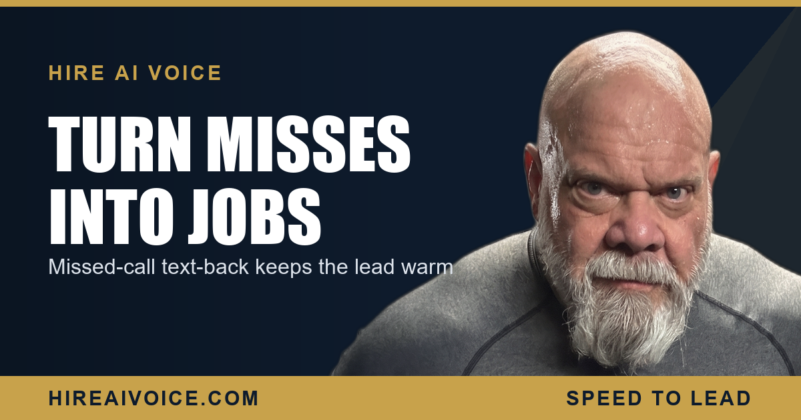

Missed-Call Text-Back: Turn Voicemail Into Booked Jobs

The Short Version
- Missed-call text-back fires an automated text within seconds of any call you cannot answer live, so the conversation continues instead of dying at voicemail.
- Most callers who reach voicemail hang up and dial a competitor, and most never try you again. An instant text reopens the thread before they move on.
- The message should be short, name your business, apologize for the miss, and ask one clear question that pulls the customer into a reply.
- It works best as the safety net under a 24/7 AI voice agent that answers and books most calls live, so no lead ever ends in silence.
What Is Missed-Call Text-Back?
Missed-call text-back is an automation that sends a text to any caller you could not answer live, usually within seconds of the missed call. Instead of leaving the customer staring at your voicemail greeting, the system reaches back out the moment the call ends and invites them to keep the conversation going. A dead end becomes an open thread.
I spent years in corrections and then on the LAPD before I ever sold a house in Santa Clarita, and the lesson carries over: the gap between a problem and a response is where everything goes wrong. A missed call is that gap. Text-back closes it before the customer has a chance to call the next name on the list.
How Fast Does the Text-Back Send?
Within seconds. The whole value lives in the speed. A good system fires the instant the call ends unanswered, while the customer still has the phone in their hand and your business still on their mind. Wait two minutes and you are competing with the three other companies they already called. Wait ten and the job is gone.
Picture the homeowner with water spreading across the kitchen floor. They are not leaving a calm voicemail and waiting. They are dialing until a human answers. A text that lands five seconds after their call says someone is paying attention, and that alone is often enough to keep them with you.
Why Missed-Call Text-Back Recovers Jobs You Would Lose
It recovers jobs because it reopens a conversation the customer had already given up on. When a call rolls to voicemail, 62% of callers hang up and dial your competitor, and 85% never try you again. That lead is gone, and most owners never even know it existed. The leak is invisible, which is exactly why it is so expensive.
The job was never lost on price. It was lost in the silence after the beep.
A text-back fills that silence. It turns a one-shot phone call into a two-way thread the customer can answer on their own time, from the grocery store, the job site, wherever they are. This is the same lever as speed to lead in the first five minutes: the business that responds first wins, and a text that fires in seconds is about as fast as a response gets. You are not buying new leads. You are stopping the ones you already paid for from walking out the door.
What Should the Missed-Call Text-Back Message Say?
Keep it short, name your business, apologize for the miss, and ask one clear question. The customer should know in one glance who texted them and what to do next. A long, formal paragraph reads like spam and gets ignored. A quick, human note reads like a real person and gets a reply.
Here is a template that works:
"Sorry we missed your call, this is Joe at ABC Plumbing. What can we help you with?"
That is the whole thing. Naming the business builds instant trust, because the customer knows the text is not random. The apology shows you noticed. The question does the real work, because it pulls them into a back-and-forth instead of leaving them to wonder whether to bother replying. Avoid links, avoid a wall of options, and never make them feel like they are talking to a robot reading a script.
How It Pairs With a 24/7 AI Voice Agent
The strongest setup is a 24/7 AI voice agent answering and booking calls live, with missed-call text-back as the safety net underneath. The voice agent picks up nearly every call the instant it rings, greets the caller by your business name, answers questions, and books the appointment on the spot, day or night. Very little ever reaches voicemail in the first place.
For the rare call that still slips through, a simultaneous ring that goes unanswered, an overflow during a flood of calls, the text-back catches it. Nothing dies in silence. You can hear exactly how the live answer side works on our AI receptionist that never sleeps, and then think of text-back as the floor it stands on. The voice agent wins the call. The text wins the one that got away.
What to Do This Week
You do not need a new ad budget to fix this. You need to stop leaking the calls you already have. Three moves:
1. Count your misses. For one week, track how many calls roll to voicemail. The number is almost always bigger than owners guess, and it is your hidden revenue leak.
2. Turn on text-back. Get an automated text firing within seconds of every missed call, with a short, named, human message.
3. Put a 24/7 answer in front of it, so most calls get answered and booked live and the text-back only has to catch the strays.
The businesses winning in Santa Clarita and Los Angeles County are not the ones spending the most. They are the ones who never let a customer hit a wall of silence. Close the gap, and the jobs you were already losing start showing up on your calendar.
Never Let a Call Go Cold
Our AI voice agent answers every call 24/7, books the job, and follows up automatically, with missed-call text-back as the backstop. Live in 72 hours. $297/month, no contracts. Or call Sarah, our live agent, and hear it yourself.